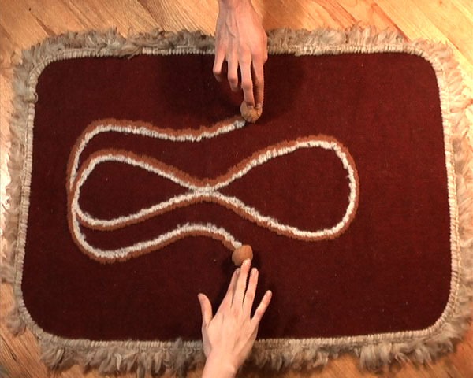
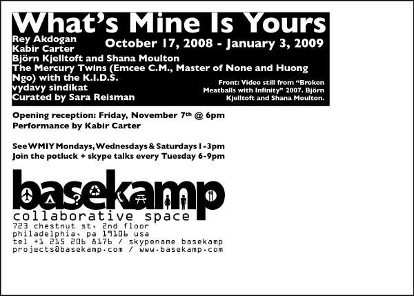

What's Mine Is Yours: Opening at Basekamp
October 17, 2008 - January 3, 2009
Basekamp
723 Chestnut Street
Philadelphia, PA 19106
215 592 7288
Friday, November 7 @ 6pm: opening reception
@ 7:30pm: performance by The Mercury Twins
@ 8:30pm: performance by Kabir Carter
Gallery Hours: Monday, Wednesday, and Saturday, 1-3pm and by appointment
What's mine is yours, what's yours is mine, so the saying goes. Some think it is a Jewish proverb, others cite it as a socialist ideal. Is this concept of share and share alike relevant to artistic collaboration? The exhibition What's Mine Is Yours examines the motives and results of artistic collaboration, a mode of artmaking that questions fixed notions of authorship, resists institutional hierarchies, and in some cases, implicates unintentional participants through public, unannounced stagings of performative artworks.
What's Mine Is Yours presents a range of projects that are collaborative and address artistic collaboration. Artists in the exhibition include Rey Akdogan, Kabir Carter, Bjorn Kjelltoft and Shana Moulton, The Mercury Twins (Emcee C.M., Master of None and Huong Ngo) with the K.I.D.S., and vydavy sindikat (whose name in Russian means 'you and you collective').
Rey Akdogan and Kabir Carter provide a critique of conventional collaboration. For the exhibition, Akdogan has generated a list of the good, the bad, and the ugly associations with collaboration. Carter's sound-based performances are generated with a combination of input from viewers, the immediate environment, and the unwitting contributions of radio operators and endusers of electronic communications systems. From Bjorn Kjelltoft and Shana Moulton is a video created for a joint exhibition at Fordham University in New York where they produced new video and a performance in which their respective identities merged under the title Star Systems. More broadly participatory is The Mercury Twins' Cloud City which the artists - Emcee C.M., Master of None and Huong Ngo - propose as an open invitation to the public of a given place to form an instant community like a gathering of clouds. Similarly open-ended in respect to participation is vydavy sindikat's Public Gathering Project which is a real time, public space correlative to technologically based networking systems. All together, the artists in What's Mine Is Yours question the nature of collaboration and provide idealistic answers as to what it might mean. In all, the negotiations of 'working together' are revealed to be murky and complex, and are dependent upon the generosity of co-conspirators, viewers, organizers, the public, and you.
What's Mine Is Yours has been organized by Sara Reisman.
